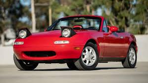

M.I.A.T.A
Miata Is Always The Answer
Why Miatas Are Great
- Lightweight Design
- Quick handling
- Easy to drive
- Autocross Favorite
- Great cornering
- Affordable to own
- Popular Choice
- Huge community support
- Miata Is Always The Answer
The Mazda NA Miata is one of the most recommended cars for beginners entering
autocross, and for good reason. Lightweight, rear-wheel drive, affordable, and incredibly responsive, the
Miata teaches drivers how to carry speed through corners rather than relying on raw horsepower. In
autocross, where tight courses reward precision and control, the NA Miata shines. Its balanced chassis and
predictable handling make it easy to learn the fundamentals of racing while still being rewarding for
experienced drivers. Many autocross champions started their journey behind the wheel of a Miata because it
provides such an excellent platform for developing driving skills.
Among car enthusiasts, you'll often hear the phrase "Miata Is Always The Answer," commonly abbreviated as M.I.A.T.A. This saying exists because whenever someone asks for a fun, affordable, reliable sports car, the answer is frequently the Miata. Looking for a weekend toy? Miata. Want to learn performance driving? Miata. Need an inexpensive autocross car? Miata. The NA generation, produced from 1989 to 1997, is especially beloved thanks to its iconic pop-up headlights, simple mechanical design, and pure driving experience. It embodies the philosophy that driving enjoyment comes from balance and connection rather than excessive power.
For someone wanting to get into autocross, the NA Miata represents one of the best learning tools available. Its forgiving nature allows drivers to make mistakes without being overwhelmed, while its low operating costs keep racing affordable. Because the car has a massive aftermarket community, upgrades, maintenance information, and technical support are easy to find. Most importantly, the Miata rewards skill development; as a driver improves, the car continues to reveal more of its potential. That's why generations of autocross enthusiasts continue to repeat the mantra: Miata Is Always The Answer.

Among car enthusiasts, you'll often hear the phrase "Miata Is Always The Answer," commonly abbreviated as M.I.A.T.A. This saying exists because whenever someone asks for a fun, affordable, reliable sports car, the answer is frequently the Miata. Looking for a weekend toy? Miata. Want to learn performance driving? Miata. Need an inexpensive autocross car? Miata. The NA generation, produced from 1989 to 1997, is especially beloved thanks to its iconic pop-up headlights, simple mechanical design, and pure driving experience. It embodies the philosophy that driving enjoyment comes from balance and connection rather than excessive power.
For someone wanting to get into autocross, the NA Miata represents one of the best learning tools available. Its forgiving nature allows drivers to make mistakes without being overwhelmed, while its low operating costs keep racing affordable. Because the car has a massive aftermarket community, upgrades, maintenance information, and technical support are easy to find. Most importantly, the Miata rewards skill development; as a driver improves, the car continues to reveal more of its potential. That's why generations of autocross enthusiasts continue to repeat the mantra: Miata Is Always The Answer.